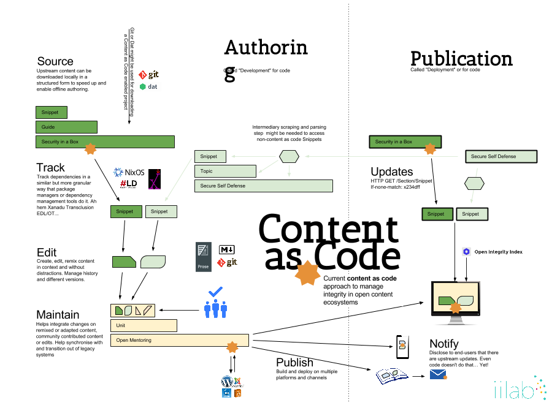

Content as Code is an approach to develop workflows and technology to improve content re-use and maintainability.
It aims to make content authoring and management benefit from software engineering collaboration best practices.
Our design goals are to enable:

Our technology approach builds on top of lightweight tools that separate concerns (instead of large monolithic frameworks as generally seen in CMSes):
Content as code is supported by a partnership. The partnership brings together implementers contributing to projects publishing free/libre and open source content and wanting to have a lightweight (post-CMS or CMS-Free) approach to content management that focus on the author experience (as well as editor and translator experience).
Read more about: